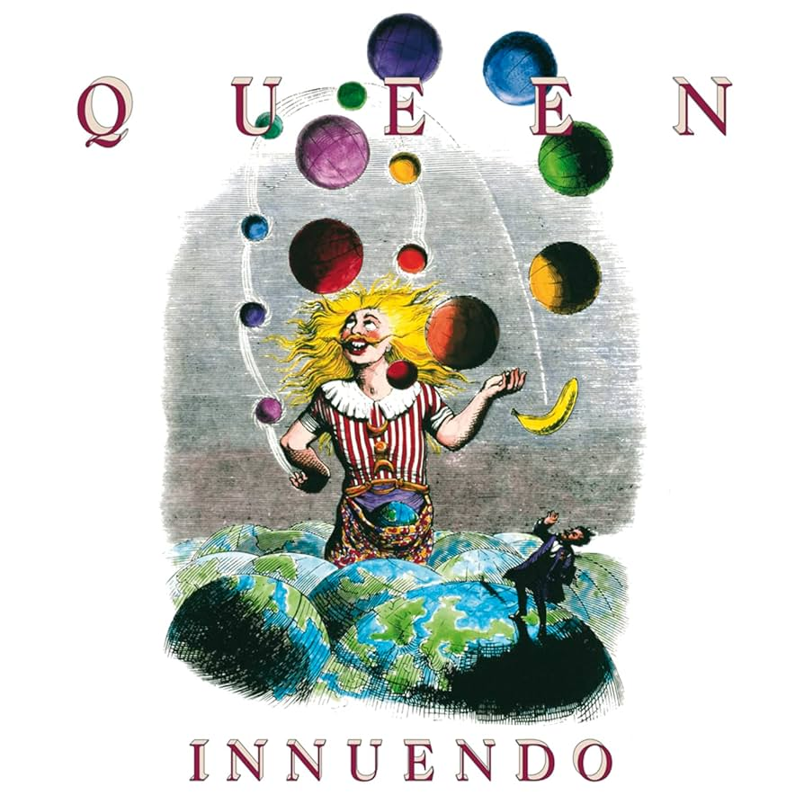
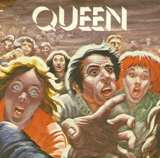

CANÇONS MÉS ESCOLTADES

Bohemian Rhapsody
Queen ha fet més en una cançó de 6 minuts de durada que molts artistes en tota la seva discografia.
Escolta-la!

Don't Stop Me Now
La millor cançó per quan vols començar una festa... o acabar-la a les 6 del matí.
Escolta-la!DESCOBREIX MÉS CANÇONS

Innuendo
Aquí és el moment en què Queen decideix crear una balada rockera acompanyada d'una guitarra acústica, i clar, el resultat és una obra mestra.
Escolta-la!
Brighton Rock
Si aquesta cançó fos un experiment científic, el resultat seria una reacció en cadena de solos de guitarra i adrenalina.
Escolta-la!
Spread Your Wings
Quan Queen et diu que deixis tot i volis cap a la llibertat… però tu només vols volar fins al sofà.
Escolta-la!ANÈCDOTES
Michael Jackson i la seva obsessió amb Another One Bites The Dust
Another One Bites the Dust mai va ser considerat com un potencial senzill fins que la banda ho va tocar enfront de Michael Jackson. Ell va quedar tan impactat que els va aconsellar que el llancessin perquè sonés a totes les estacions de ràdio als EUA. Roger Taylor va recordar el 2012 com Jackson els deia que "estaven bojos" si no llançaven la cançó com un senzill. Però Taylor pensava que “mai no serà un èxit”.

I ha resultat una de les cançons que, amb les primeres notes, es reconeix a tot arreu.
L’Oda del pollastre fregit a One Vision
La cançó One Vision, del 1985, va començar amb un ritme de Brian May que va motivar Freddie Mercury a aplicar el seu talent al voltant de la melodia en lloc de la lletra. Quan l'assajaven a l'estudi, Mercury cantava paraules a l'atzar que incloïen menjar: "One shrimp, one prawn, one clam, one chicken" ("Una gamba, un llagostí, una cloïssa, un pollastre"). Al final, la cançó acaba amb un emfàtic crit de Mercury de "Just gimme, gimme, gimme, gimme... fried chicken!" ("Dóna'm, dóna'm, dóna'm, dóna'm, dóna'm, dóna'm… pollastre fregit!").

El final és definitivament divertit, però no hi ha dubte que Queen sempre va prendre la seva professionalitat molt de debò. D'aquí ve probablement el seu èxit rotund al llarg de dècades.
Mai se sap quan pot venir la inspiració
En diverses entrevistes el mànager de Freddie Mercury ha explicat que sempre duia una llibreta i un boli al damunt perquè en Freddie es podia posar a escriure una cançó en qualsevol moment. D’aquesta situació va aparèixer la cançó “Crazy Little Thing Called Love”, la qual va escriure Freddie en 10 minuts mentre estava al lavabo. Segons el mànager, Mercury va sortir corrents del lavabo i va anar directe a l’estudi a compondre.

No volien a Freddie Mercury a la banda?
Abans de Queen, quan encara eren tots estudiants universitaris, els membres Roger Taylor i Brian May formaven part, d'una banda, anomenada Smile on el cantant era Tim Staffel, conegut de Freddie Mercury. Mercury els havia seguit a alguns concerts i tenia moltes aspiracions musicals, però els membres de Smile no estaven segurs de les capacitats de Freddie Mercury. Malgrat això, van acabar fent-se bons amics i, al cap i a la fi, tots perseguien un mateix somni: ser estrelles de rock. I bé, tots ja sabem com va acabar la història.

GALERIA